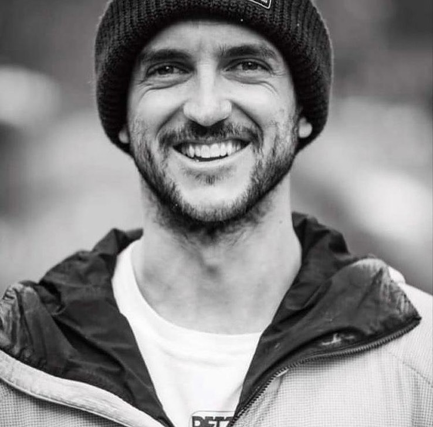

Juan Pablo Mohr
Juan Pablo Mohr Prieto (b. February 9, 1987, Chile - February 6, 2021, K2, Pakistan ) was a Chilean architect and mountaineer , specialized in the ascent of eight thousand . In 2017 he became the Annapurna and the following year the Manaslu . In 2019, together with Sergi Mingote , he completed the ascents to Lhotse and Dhaulagiri , to which Mohr added Everest
In 2012, he graduated as an architect from the Diego Portales University and then devoted himself to taking mountaineering and rescue courses. He created the DeporteLibre Foundation, a non-profit organization that creates public sports infrastructure in abandoned spaces.
In 2017 , together with Sebastián Rojas they managed to summit Annapurna (8091 masl), becoming the first Chileans to achieve this feat. In 2019 , Mohr was registered in the Guinness Records by being the first person to climb the Lhotse summit (8,516 masl), and then do Everest (8,848 masl) without pause, this is without having to return to the Base camp in less than a week, without the help of Sherpas and without oxygen. In October of the same year, he made an ascent under the same conditions to Dhaulagiri (8,167 meters above sea level), also without supplementary oxygen and without the help of Sherpas.
After these ascents, Mohr began to outline a project to climb to the highest summit of each of Chile's sixteen regions and build mountain shelters in all of them, declaring that “as an architect I want to design and build shelters in the highest mountains. from each region to expand mountaineering in Chile ", also developing mountaineering workshops and training for local communities with the aim of generating a system that allows the local administration of each refuge and generating activities that promote mountain culture, with the support of the Ministry of National Assets , the National Institute of Sports andNational Tourism Service